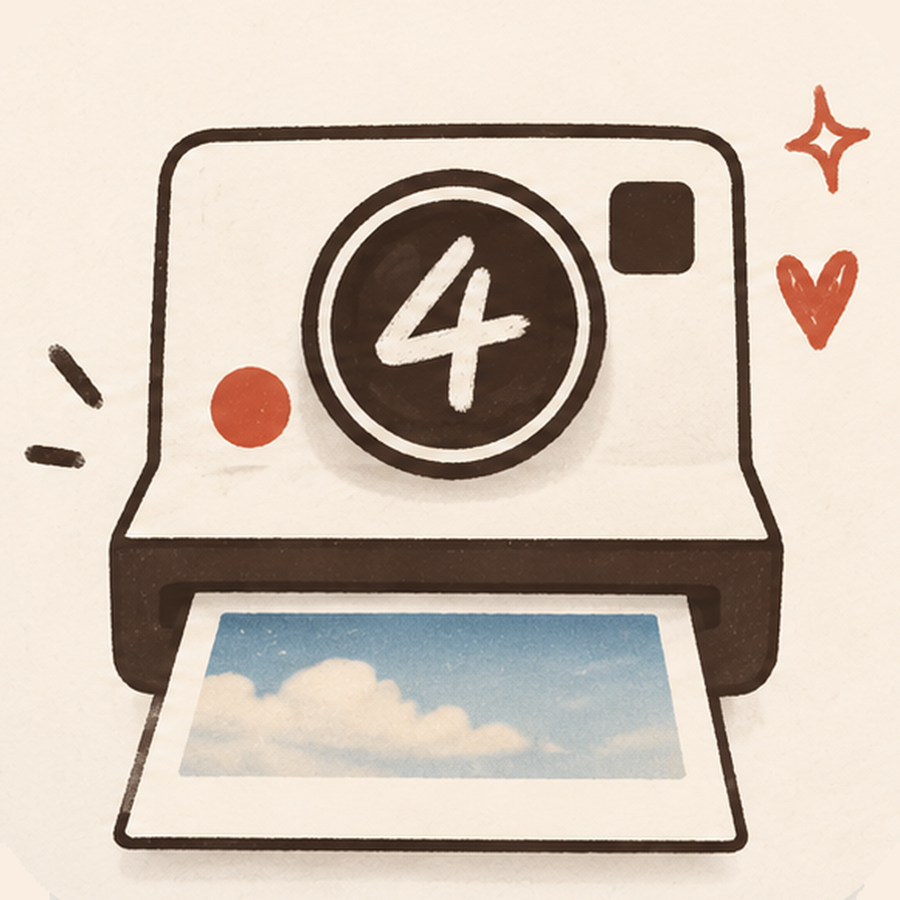
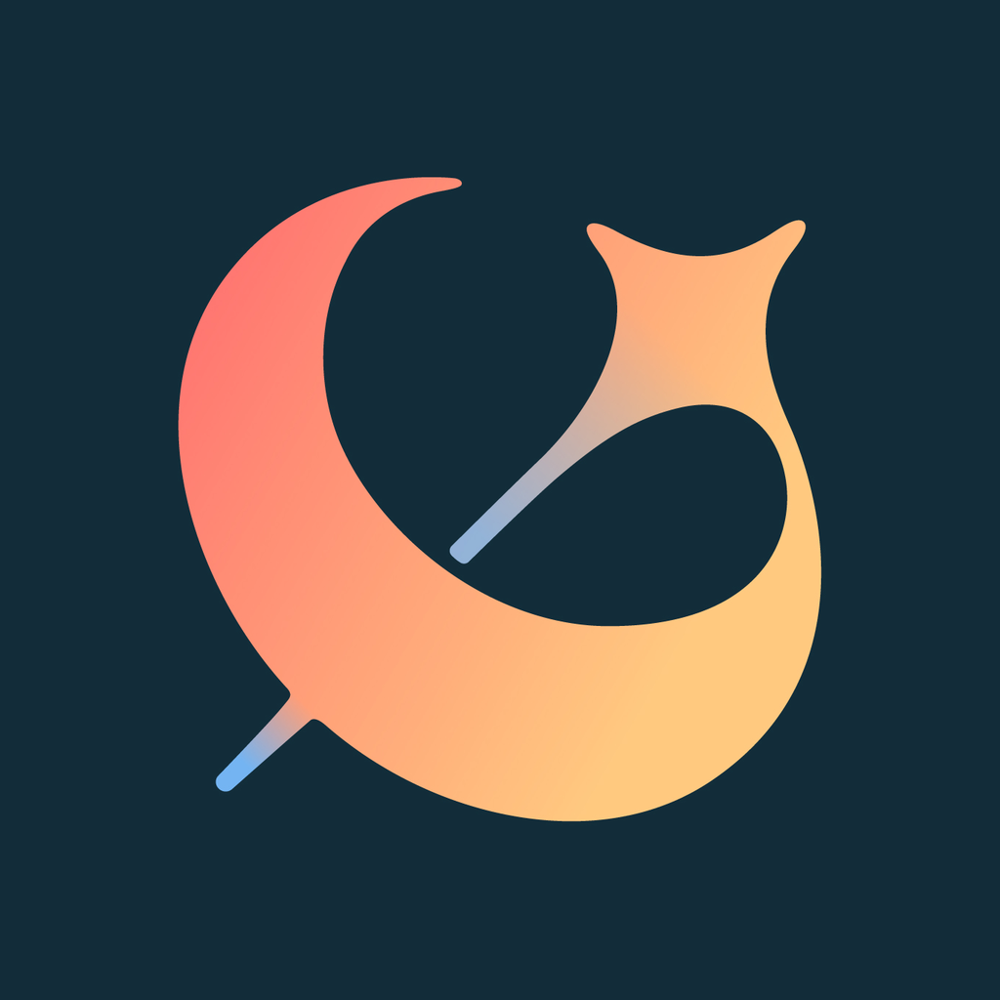
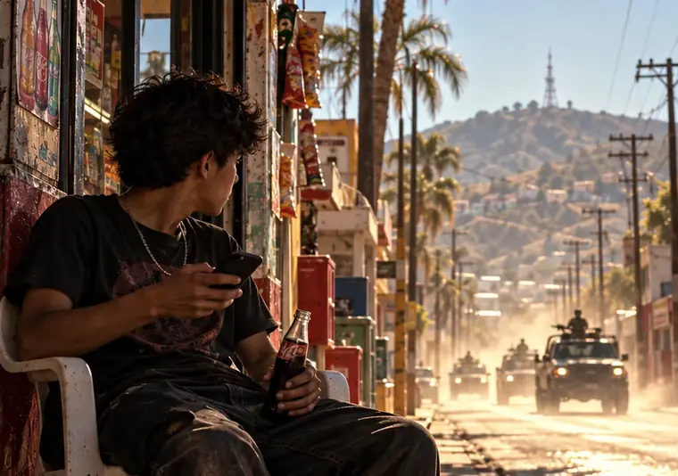

NANGMAN WORKSHOP · COLLECTION
낭만공작소 작품 소개
앱 · 카메라 · 게임 · 이야기 · 애니메이션
아홉 작품을 카드뉴스로 만나보세요.
09 WORKS / 05 CARDS EACH
포스터를 누르면 5장 카드뉴스가 열립니다.어떤 작품부터 만나볼까요?
대표 작품 01 — 06
01 / NANGMAN↗
WOONGTO · 웅토OUTDOOR / iOS
WOONGTO · 웅토
↗걸었던 길을 다시 경험하는 방법
GPS 활동 기록3D 리플레이
App Store 출시
카드뉴스 5장으로 먼저 보기
02 / NANGMAN↗

MEMORY CAMERA / iOS
인생4초
↗셔터 앞뒤의 시간까지 추억으로
전후 4초전·후면 기록
App Store 출시
카드뉴스 5장으로 먼저 보기
03 / NANGMAN↗
채CINEFILM CAMERA / iOS
채CINE
↗일상의 영상을 영화처럼
24FPS 촬영필름 룩
App Store 출시
카드뉴스 5장으로 먼저 보기
04 / NANGMAN↗

CREATIVE EDITOR / iOS
낭만페이지
↗사진과 영상에 문장을 디자인하다
디자인 템플릿영상·사진 편집
출시 준비 · 최종 마무리
카드뉴스 5장으로 먼저 보기
05 / NANGMAN↗

INTERACTIVE STORY / WEB
시날로아
↗당신의 선택으로 완성되는 스릴러
분기형 선택시네마틱 연출
웹에서 체험
카드뉴스 5장으로 먼저 보기
06 / NANGMAN↗
사투링고VOICE CHALLENGE / WEB
사투링고
↗친구의 말투를 듣는 새로운 놀이
말투 미션링크로 도전
웹 버전 · 녹음 개선 중
카드뉴스 5장으로 먼저 보기
다른 작품 07 — 09

해당 분류에 표시할 작품이 없습니다.
ABOUT NANGMAN WORKSHOP
낭만공작소
기억, 움직임, 영상, 이야기. 서로 다른 주제를 하나의 경험으로 연결하는 디지털 콘텐츠 제작 공간입니다. 개별 작품의 출시 및 지원 플랫폼은 상세페이지에서 확인할 수 있습니다.